library("here")
library("tidyverse")
library("rstatix")
library("RColorBrewer")Análisis de datos Tesis MCD
Configuración Inicial
Carga de librerías
display.brewer.all(colorblindFriendly = TRUE)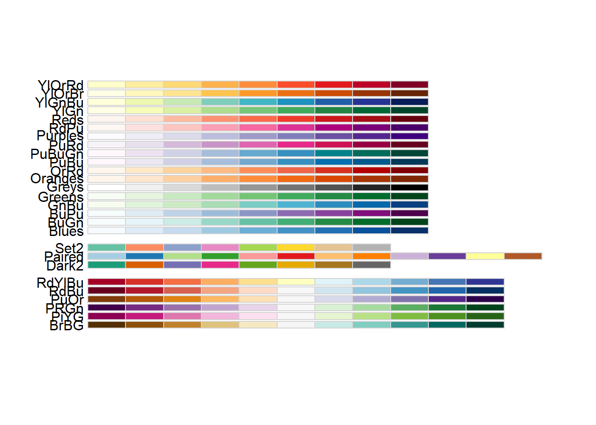
palette <- brewer.pal(8, "Dark2")Configuración de directorio de trabajo
i_am("part_i/analisis_datos.qmd")Carga de datos
metrics_source_data = read_csv(here("part_i", "metric_comparison_source_data_cleaned.csv"))Rows: 9954 Columns: 6
── Column specification ────────────────────────────────────────────────────────
Delimiter: ","
chr (3): estrategia, id_modelo_especialista, metrica
dbl (3): nro_pregunta, nro_subpregunta, valor
ℹ Use `spec()` to retrieve the full column specification for this data.
ℹ Specify the column types or set `show_col_types = FALSE` to quiet this message.Comparación de métricas de similitud
No se observan diferencias en los boxplots
lista_metricas <- metrics_source_data %>%
select(metrica) %>%
unique() %>%
.$metrica
lista_metricas [1] "exact_match" "token_f1"
[3] "jaccard_similarity" "levenshtein_similarity"
[5] "character_error_rate" "bleu"
[7] "rouge_1" "rouge_2"
[9] "rouge_l" "sbert_similarity_multilingual"
[11] "sbert_similarity_spanish" "bertscore"
[13] "length_ratio" "word_count_ratio" selected_metric <- "jaccard_similarity"
metrics_source_data %>%
filter(metrica == "jaccard_similarity") %>%
ggplot(aes(x=id_modelo_especialista, y=valor)) +
geom_boxplot() +
facet_wrap(~estrategia) +
labs(title="Índice de Jaccard",x = "Modelos", y = "Valor métrica") +
theme_bw()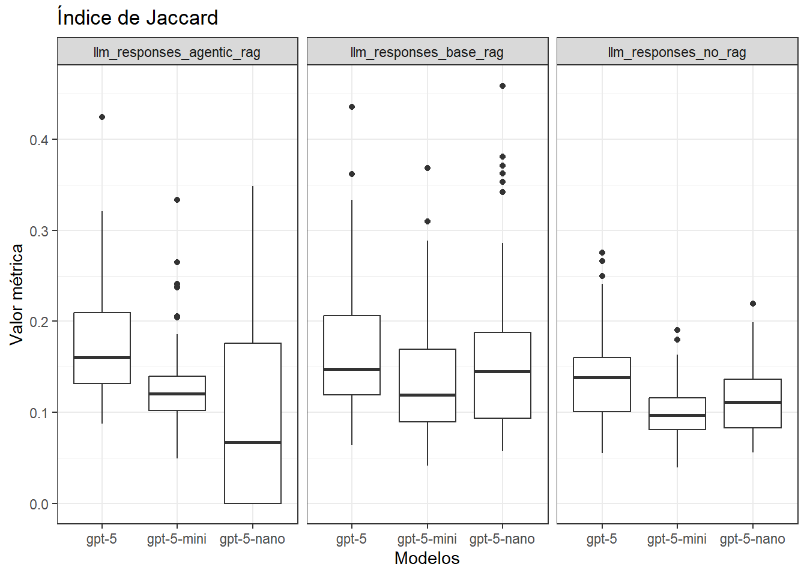
metrics_source_data %>%
filter(metrica == "jaccard_similarity") %>%
write_tsv(here("part_i", "jaccard_similarity.csv"))selected_metric <- "sbert_similarity_spanish"
metrics_source_data %>%
filter(metrica == "sbert_similarity_spanish") %>%
ggplot(aes(x=id_modelo_especialista, y=valor)) +
geom_boxplot() +
facet_wrap(~estrategia) +
labs(title="sbert_similarity_spanish",x = "Modelos", y = "Valor métrica") +
theme_bw()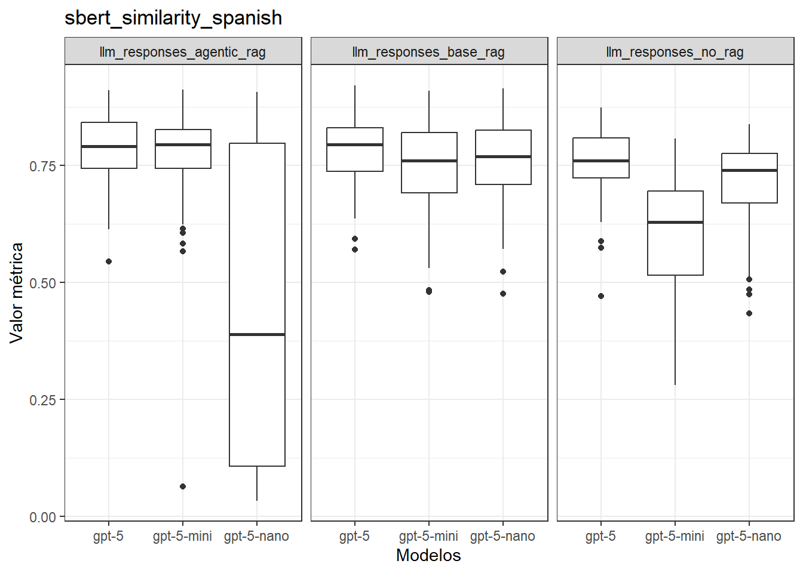
selected_metric <- "bleu"
metrics_source_data %>%
filter(metrica == "bleu") %>%
ggplot(aes(x=id_modelo_especialista, y=valor)) +
geom_boxplot() +
facet_wrap(~estrategia) +
labs(title="bleu",x = "Modelos", y = "Valor métrica") +
theme_bw()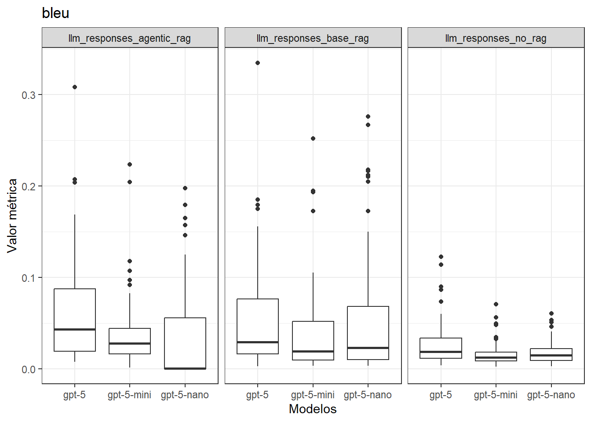
Pruebas estadísticas para evaluar métricas de similitud
# Convert grouping variables to factors
df <- metrics_source_data
df$estrategia <- as.factor(df$estrategia)
df$id_modelo_especialista <- as.factor(df$id_modelo_especialista)df# A tibble: 9,954 × 6
nro_pregunta nro_subpregunta estrategia id_modelo_especialista metrica valor
<dbl> <dbl> <fct> <fct> <chr> <dbl>
1 1 1 llm_respo… gpt-5-nano exact_… 0
2 1 1 llm_respo… gpt-5-nano token_… 0.198
3 1 1 llm_respo… gpt-5-nano jaccar… 0.110
4 1 1 llm_respo… gpt-5-nano levens… 0.173
5 1 1 llm_respo… gpt-5-nano charac… 3.82
6 1 1 llm_respo… gpt-5-nano bleu 0.018
7 1 1 llm_respo… gpt-5-nano rouge_1 0.208
8 1 1 llm_respo… gpt-5-nano rouge_2 0.0684
9 1 1 llm_respo… gpt-5-nano rouge_l 0.136
10 1 1 llm_respo… gpt-5-nano sbert_… 0.808
# ℹ 9,944 more rowsjaccard_similarity
# ---------------------------------------------------------
# METHOD 1: Shapiro-Wilk Test by Group (Cell)
# ---------------------------------------------------------
# This checks if the data is normal within every specific subgroup.
# p > 0.05 implies normality.
normality_by_group <- df %>%
filter(metrica=="jaccard_similarity") %>%
group_by(estrategia, id_modelo_especialista) %>%
shapiro_test(valor) %>%
mutate(p=round(p, 4)) %>%
write_csv(here("part_i", "jaccard_similarity_shapiro_results.csv"))
print("Shapiro-Wilk Test by Group:")[1] "Shapiro-Wilk Test by Group:"print(normality_by_group)# A tibble: 9 × 5
estrategia id_modelo_especialista variable statistic p
<fct> <fct> <chr> <dbl> <dbl>
1 llm_responses_agentic_rag gpt-5 valor 0.895 0
2 llm_responses_agentic_rag gpt-5-mini valor 0.866 0
3 llm_responses_agentic_rag gpt-5-nano valor 0.843 0
4 llm_responses_base_rag gpt-5 valor 0.917 0.0001
5 llm_responses_base_rag gpt-5-mini valor 0.907 0
6 llm_responses_base_rag gpt-5-nano valor 0.873 0
7 llm_responses_no_rag gpt-5 valor 0.950 0.0036
8 llm_responses_no_rag gpt-5-mini valor 0.965 0.028
9 llm_responses_no_rag gpt-5-nano valor 0.963 0.0223# Visualization: Q-Q Plots for each group
df %>%
filter(metrica=="jaccard_similarity") %>%
ggqqplot("valor", ggtheme = theme_bw()) +
facet_grid(estrategia ~ id_modelo_especialista) +
labs(title = "Q-Q Plots by Strategy and Model")#+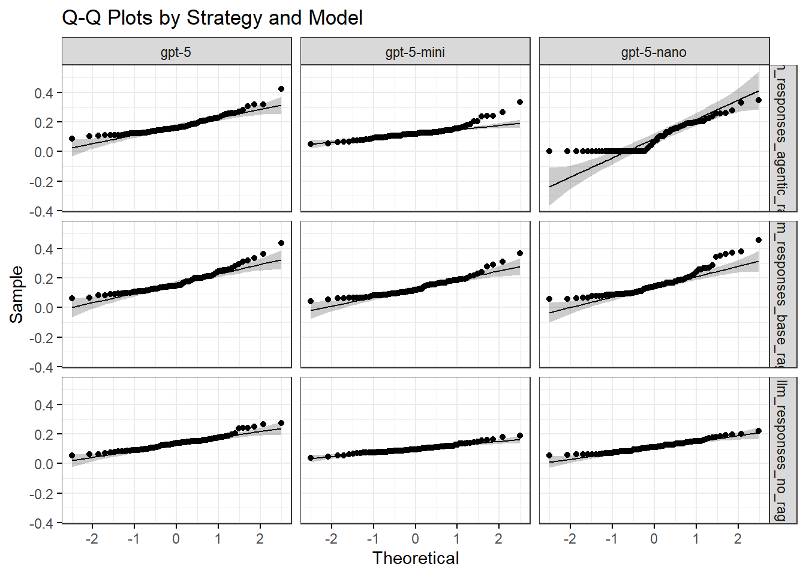
#ylim(-0.1, 0.45)sbert_similarity_spanish
# ---------------------------------------------------------
# METHOD 1: Shapiro-Wilk Test by Group (Cell)
# ---------------------------------------------------------
# This checks if the data is normal within every specific subgroup.
# p > 0.05 implies normality.
normality_by_group <- df %>%
filter(metrica=="sbert_similarity_spanish") %>%
group_by(estrategia, id_modelo_especialista) %>%
shapiro_test(valor) %>%
mutate(p=round(p, 4))
print("Shapiro-Wilk Test by Group:")[1] "Shapiro-Wilk Test by Group:"print(normality_by_group)# A tibble: 9 × 5
estrategia id_modelo_especialista variable statistic p
<fct> <fct> <chr> <dbl> <dbl>
1 llm_responses_agentic_rag gpt-5 valor 0.962 0.0195
2 llm_responses_agentic_rag gpt-5-mini valor 0.717 0
3 llm_responses_agentic_rag gpt-5-nano valor 0.799 0
4 llm_responses_base_rag gpt-5 valor 0.976 0.134
5 llm_responses_base_rag gpt-5-mini valor 0.961 0.0162
6 llm_responses_base_rag gpt-5-nano valor 0.968 0.045
7 llm_responses_no_rag gpt-5 valor 0.939 0.0009
8 llm_responses_no_rag gpt-5-mini valor 0.950 0.0039
9 llm_responses_no_rag gpt-5-nano valor 0.894 0 # Visualization: Q-Q Plots for each group
df %>%
filter(metrica=="sbert_similarity_spanish") %>%
ggqqplot("valor", ggtheme = theme_bw()) +
facet_grid(estrategia ~ id_modelo_especialista) +
labs(title = "Q-Q Plots by Strategy and Model")#+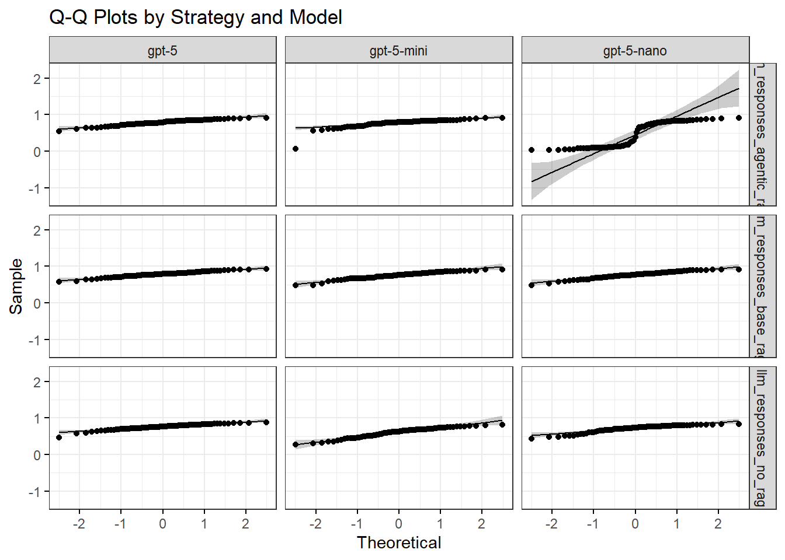
#ylim(-0.1, 0.45)Exploración de LLM as a judge
Carga de datos
llm_judge_data <- read_csv(here("part_i","final_judge_results.csv"))Rows: 2133 Columns: 9
── Column specification ────────────────────────────────────────────────────────
Delimiter: ","
chr (5): modelo_juez, sistema, modelo_respuesta, reason_respuesta_correcta, ...
dbl (4): numero_pregunta, numero_subpregunta, score_respuesta_correcta, scor...
ℹ Use `spec()` to retrieve the full column specification for this data.
ℹ Specify the column types or set `show_col_types = FALSE` to quiet this message.llm_judge_data# A tibble: 2,133 × 9
numero_pregunta numero_subpregunta modelo_juez sistema modelo_respuesta
<dbl> <dbl> <chr> <chr> <chr>
1 1 1 grok_4_1_fast_fr… llm_re… gpt-5-nano
2 1 2 grok_4_1_fast_fr… llm_re… gpt-5-nano
3 1 3 grok_4_1_fast_fr… llm_re… gpt-5-nano
4 2 1 grok_4_1_fast_fr… llm_re… gpt-5-nano
5 2 2 grok_4_1_fast_fr… llm_re… gpt-5-nano
6 2 3 grok_4_1_fast_fr… llm_re… gpt-5-nano
7 3 1 grok_4_1_fast_fr… llm_re… gpt-5-nano
8 3 2 grok_4_1_fast_fr… llm_re… gpt-5-nano
9 3 3 grok_4_1_fast_fr… llm_re… gpt-5-nano
10 4 1 grok_4_1_fast_fr… llm_re… gpt-5-nano
# ℹ 2,123 more rows
# ℹ 4 more variables: score_respuesta_correcta <dbl>,
# reason_respuesta_correcta <chr>, score_precision_legal <dbl>,
# reason_precision_legal <chr>llm_judge_data %>% colnames()[1] "numero_pregunta" "numero_subpregunta"
[3] "modelo_juez" "sistema"
[5] "modelo_respuesta" "score_respuesta_correcta"
[7] "reason_respuesta_correcta" "score_precision_legal"
[9] "reason_precision_legal" Exploración “Respuesta correcta”
Métrica que compara la respuesta de los modelos con la respuesta revisada por un profesional del derecho.
En los gráficos se observó que algunos modelos no cumplieron con los valores de la rúbrica (0.0, 0.25, 0.50, 0.75, 1)
llm_judge_data %>%
ggplot(aes(x=modelo_juez, y=score_respuesta_correcta)) +
geom_jitter() +
theme_bw()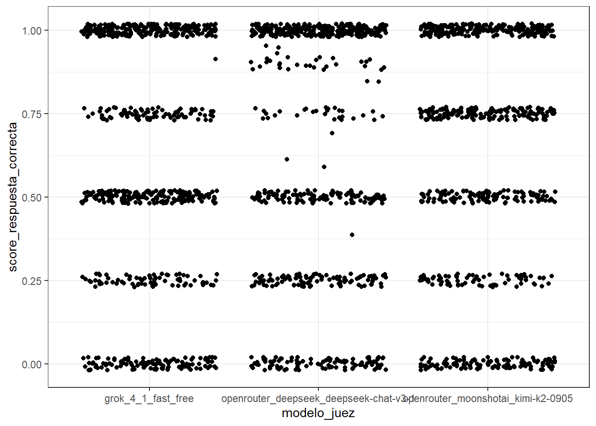
llm_judge_data %>%
.$modelo_juez %>%
unique()[1] "grok_4_1_fast_free"
[2] "openrouter_deepseek_deepseek-chat-v3-1"
[3] "openrouter_moonshotai_kimi-k2-0905" judge_model_names <- c(
`grok_4_1_fast_free` = "Grok 4.1 Fast",
`openrouter_deepseek_deepseek-chat-v3-1` = "DeepSeek Chat V3.1",
`openrouter_moonshotai_kimi-k2-0905` = "Kimi K2"
)
llm_judge_data %>%
ggplot(aes(x=as_factor(score_respuesta_correcta))) +
geom_bar() +
facet_wrap(~modelo_juez, labeller = as_labeller(judge_model_names)) +
labs(x="Score respuesta correcta", y="Recuento") +
theme_bw()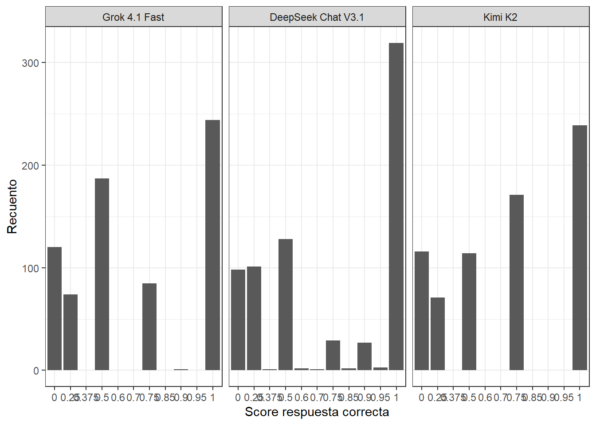
llm_judge_data %>%
filter(modelo_juez=="grok_4_1_fast_free") %>%
.$score_respuesta_correcta %>%
unique()[1] 0.50 1.00 0.00 0.75 0.25 0.90llm_judge_data %>%
filter(modelo_juez=="grok_4_1_fast_free") %>%
ggplot(aes(x=as.factor(score_respuesta_correcta))) +
geom_bar() +
theme_bw()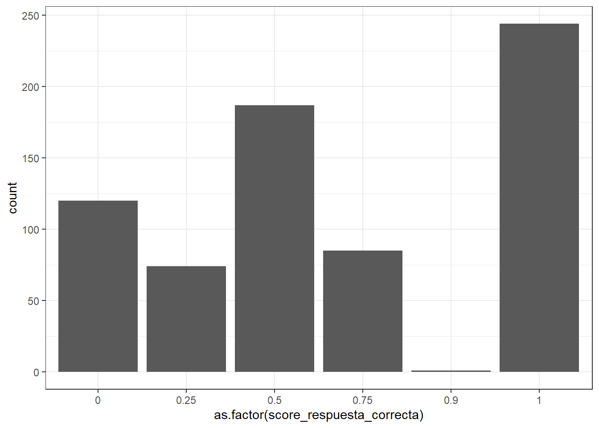
Exploración “Precisión Legal”
La métrica se emplea para identificar si los modelos citaron los artículos correctos en base a los artículos citados para la respuesta correcta.
llm_judge_data %>%
ggplot(aes(x=modelo_juez, y=score_precision_legal)) +
geom_jitter() +
theme_bw()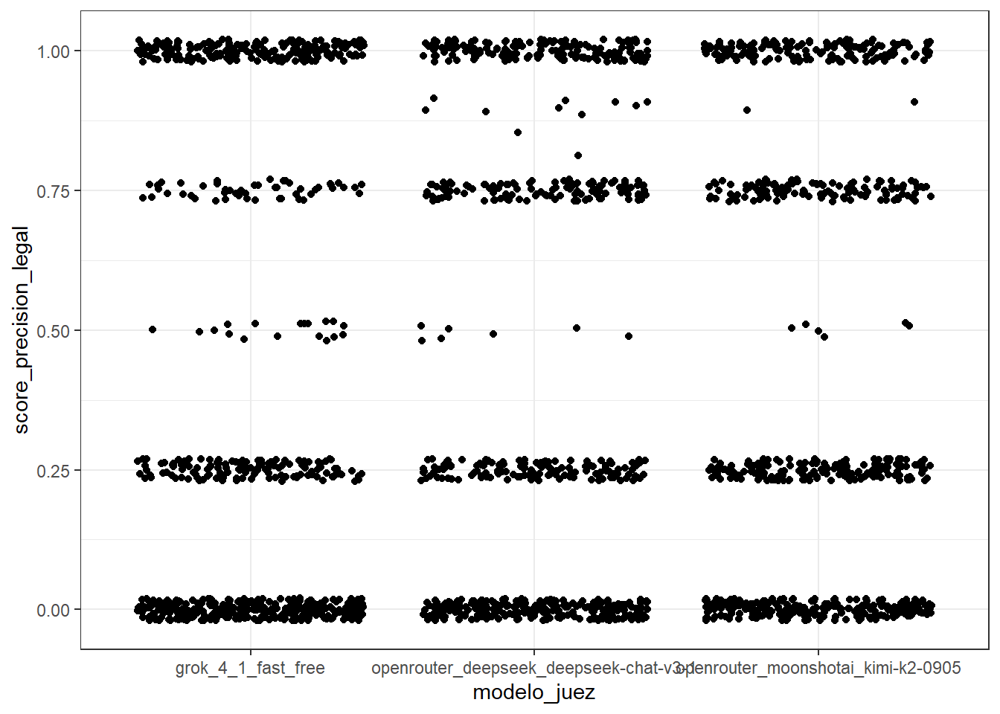
llm_judge_data %>%
.$modelo_juez %>%
unique()[1] "grok_4_1_fast_free"
[2] "openrouter_deepseek_deepseek-chat-v3-1"
[3] "openrouter_moonshotai_kimi-k2-0905" llm_judge_data %>%
filter(modelo_juez=="grok_4_1_fast_free") %>%
.$score_precision_legal %>%
unique()[1] 0.00 0.25 0.50 0.75 1.00llm_judge_data %>%
filter(modelo_juez=="grok_4_1_fast_free") %>%
ggplot(aes(x=as.factor(score_precision_legal))) +
geom_bar() +
theme_bw()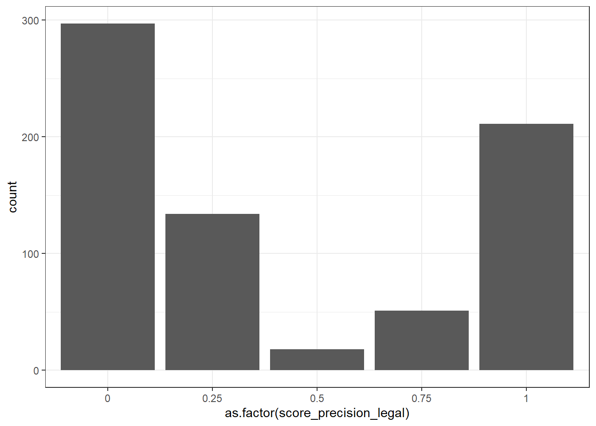
llm_judge_data %>%
filter(modelo_juez=="openrouter_moonshotai_kimi-k2-0905") %>%
.$score_precision_legal %>%
unique()[1] 0.25 1.00 0.00 0.75 0.50 0.90llm_judge_data %>%
filter(modelo_juez=="openrouter_moonshotai_kimi-k2-0905") %>%
ggplot(aes(x=as.factor(score_precision_legal))) +
geom_bar() +
theme_bw()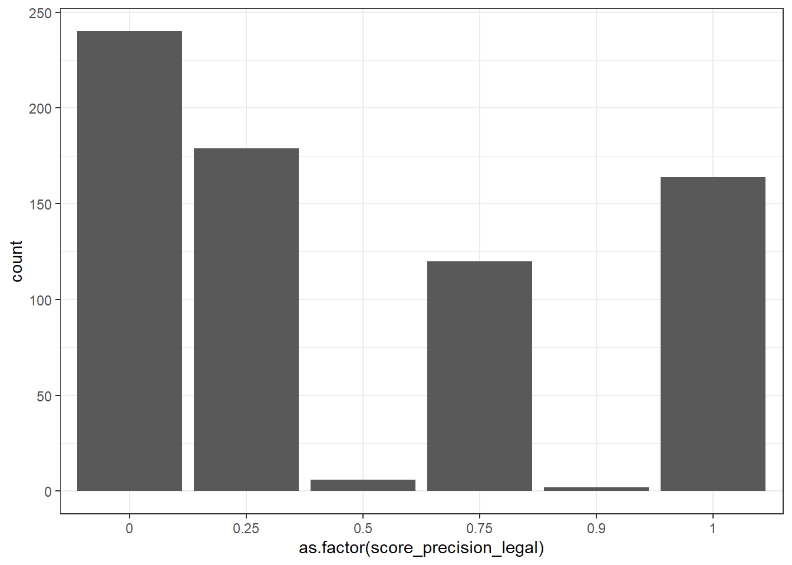
llm_judge_data %>%
filter(modelo_juez=="openrouter_moonshotai_kimi-k2-0905", score_precision_legal==0.9) # A tibble: 2 × 9
numero_pregunta numero_subpregunta modelo_juez sistema modelo_respuesta
<dbl> <dbl> <chr> <chr> <chr>
1 1 1 openrouter_moonsh… llm_re… gpt-5-mini
2 7 4 openrouter_moonsh… llm_re… gpt-5
# ℹ 4 more variables: score_respuesta_correcta <dbl>,
# reason_respuesta_correcta <chr>, score_precision_legal <dbl>,
# reason_precision_legal <chr>llm_judge_data %>%
filter(modelo_juez=="openrouter_deepseek_deepseek-chat-v3-1") %>%
.$score_precision_legal %>%
unique()[1] 0.00 0.75 0.25 1.00 0.50 0.80 0.90 0.85llm_judge_data %>%
filter(modelo_juez=="openrouter_deepseek_deepseek-chat-v3-1") %>%
ggplot(aes(x=as.factor(score_precision_legal))) +
geom_bar() +
theme_bw()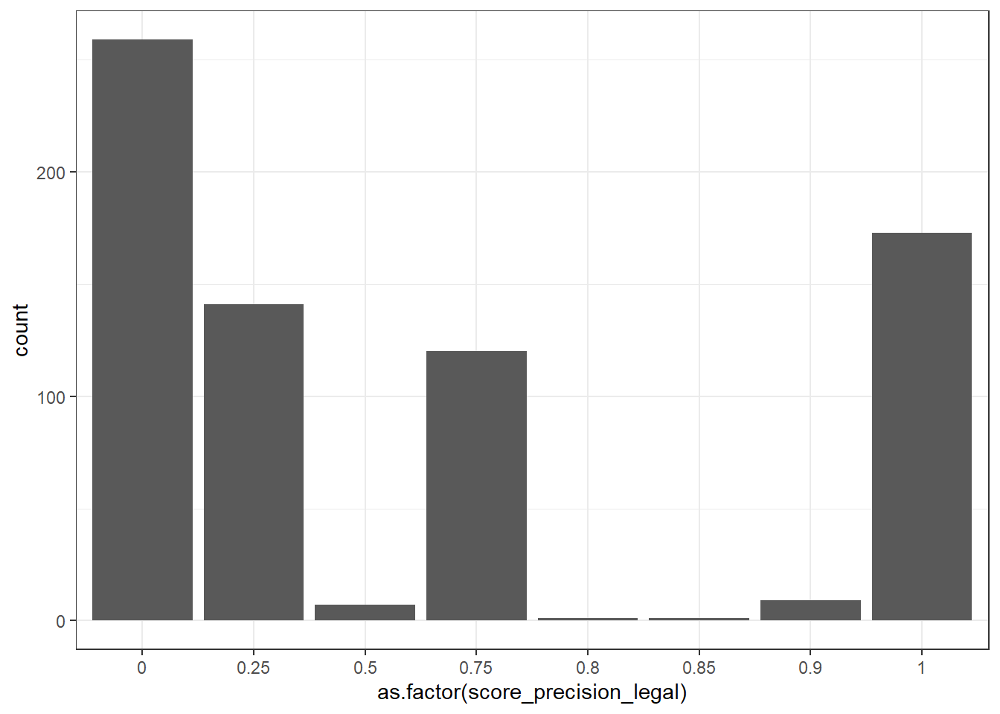
Recommendations for statistics to use
Thank you for clarifying your experimental setup. Here’s how you can approach the statistical analysis:
1. Data Structure
Independent Variable: System type (No RAG, Basic RAG, Agentic RAG)
Dependent Variable: Judge scores (ordinal: 0.0, 0.25, 0.5, 0.75, 1.0)
Design: Each question was answered by all three models, and each answer was evaluated by three judges.
2. Key Questions to Address
Inter-rater Reliability: Are the judges consistent in their scoring?
System Comparison: Do the systems (No RAG, Basic RAG, Agentic RAG) differ in their average scores?
3. Recommended Statistical Tests
A. Inter-rater Reliability
Krippendorff’s Alpha:
Best for multiple raters and ordinal data.
Measures agreement among all three judges, accounting for chance.
B. Comparing Systems
Friedman Test:
Non-parametric test for repeated measures (since each question was answered by all three systems).
Tests if there are significant differences between the three systems across all questions.
Post-hoc Analysis (if Friedman is significant):
- Use Wilcoxon Signed-Rank Tests with Bonferroni correction to identify which systems differ.
C. Visualization
- Plot the average scores for each system to visually compare performance.
4. Steps to Proceed
Calculate Krippendorff’s Alpha for each system to check judge consistency.
Run the Friedman Test to see if there are overall differences between systems.
Perform post-hoc tests if the Friedman test is significant.